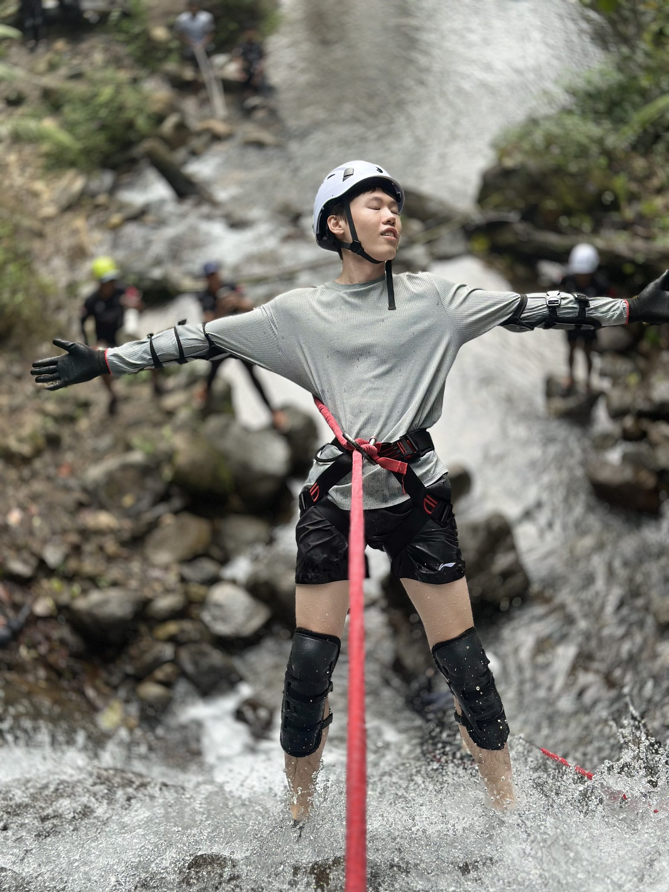

工作之外，我也在认真生活。
出汗的运动、换频道的音乐、慢慢积累的自我提升——如果你也喜欢其中一项，我们大概会聊得来。
Outdoor
先让身体出汗，脑子才会清醒
我喜欢那些会把人重新拽回身体里的运动——溪降时要全神贯注地看脚下的水流和岩壁，徒步时呼吸会跟着海拔一起变得诚实，飞盘场上也没有多余的脑容量去想工作的事。
冬天去滑雪，是这几年最固定的仪式感：雪雾里什么都看不清，反而什么都想明白了。
运动不是用来保持身材的，是用来保持清醒的。

Music
用不同的频道，切换不同的自己
Jazz 适合一个人加班到很晚的时候；City Pop 是周末清晨、阳光很好、什么都不用做的那种松弛；摇滚留给情绪需要出口的瞬间；Afro 的节奏感，总会让人忍不住想动起来。
我没有固定歌单，更像是按心情换频道——音乐大概是最快能把人从一种状态切到另一种状态的方式。

Self-growth
把成长当成一件可以持续练习的事
2025 年读的书里有一条隐约的线索：怎么在新工具和新规则下，不浪费自己的判断力——从《黑客与画家》里对审美的执着，到《真需求》里反复强调的"找到真实需求"，再到《财富觉醒》提醒的认知边界，都是在往这个方向走。
投资理财和健身，某种程度上是另一种形式的读书——都需要长期主义、反脆弱，靠复利才能看到结果。
人很难赚到认知以外的钱，所以先把认知这件事做扎实。